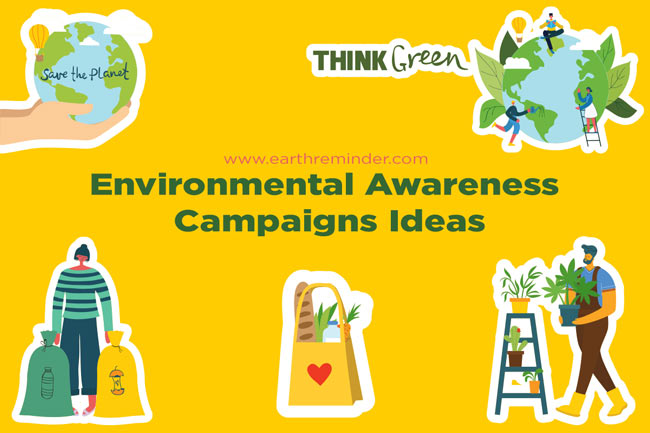
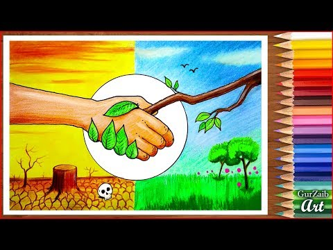
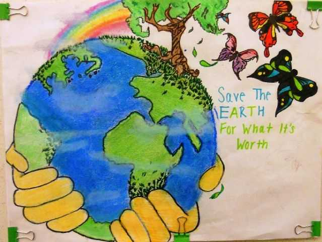
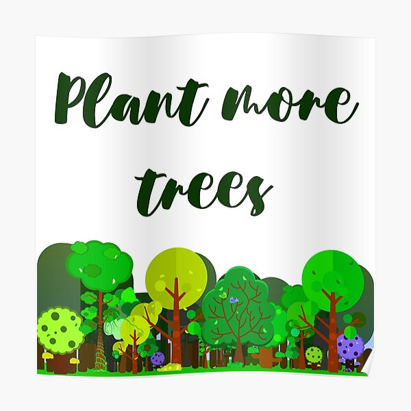

Environmental Conservation Awareness
Environmental awareness is to understand the fragility of our environment and the importance of its protection. Promoting environmental awareness is an easy way to become an environmental steward and participate in creating a brighter future for our children.
Our Campaign
To define environmental awareness we must first understand the environmentalist movement. Environmentalism is an ideology that evokes the necessity and responsibility of humans to respect, protect, and preserve the natural world from its anthropogenic (caused by humans) afflictions. Environmental awareness is an integral part of the movement’s success. By teaching our friends and family that the physical environment is fragile and indispensable, we can begin fixing the problems that threaten it.
Some Of The Environmental Issues
Here are several cause-and-effect problems that harm our environment:
- Oil Drilling
- Deforestation
- Production of Plastic Goods
Let's All Conserve Our Environment
Before you can begin promoting environmental awareness in your community, you must first make sure that you have a thorough understanding of environmental issues. Stay up to date on environmental news, read books and other resources, and learn about the issues affecting your own community. It’s much easier to talk to others about the environment if you’ve already taken the time to educate yourself.
Be Part Of The Solution
After you’ve chosen an issue and educated yourself, engage your community, family, and friends in a conversation about the issue’s urgency and importance. By engaging your community in the conversation, you are not only promoting environmental awareness, but you may also find opportunities to participate in communal projects or to get involved in other related causes.